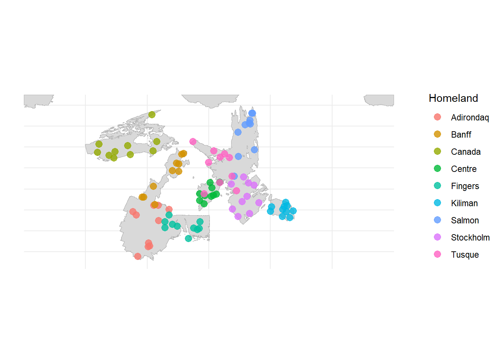
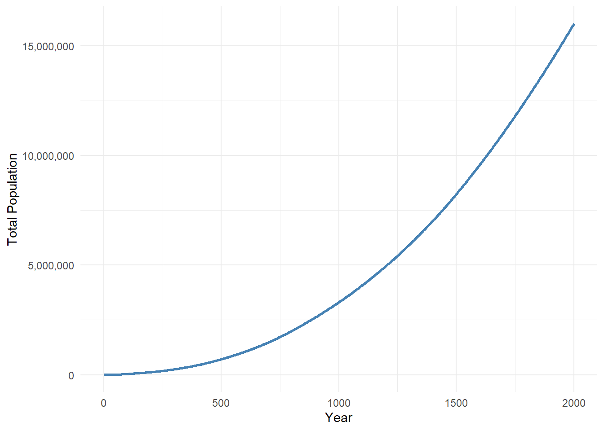
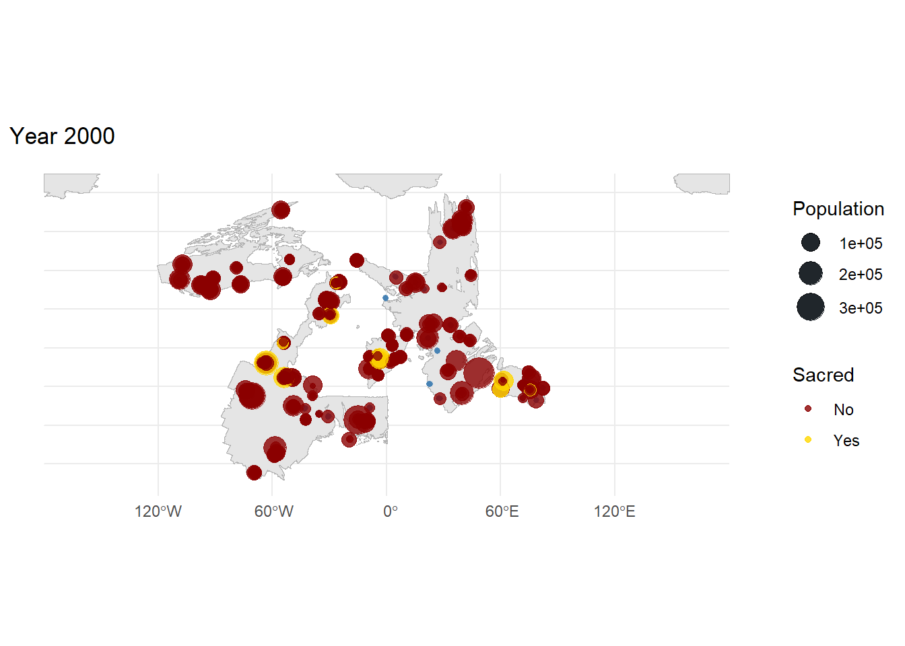

8 Population, Migration, Settlement
8.1 The Peopling of EARTH
In the beginning, the sentient peoples of EARTH were few and scattered. Small bands of foragers wandered the fertile valleys and coastal plains, following game and gathering what the land provided. These early wanderers knew nothing of cities or trade routes—only the rhythm of seasons and the pull of distant horizons.
Over millennia, something remarkable occurred. Some bands found places so bountiful, so blessed by RA’s sacred sites, that they stopped wandering. They built shelters that became villages, villages that became towns, and towns that grew into great cities. The sacred sites of RA drew settlers like lodestones, their divine power amplifying the prosperity of those who stayed near.
8.2 The First Wanderers
The earliest peoples emerged in scattered bands across the continents—all save frozen Amazonia at the crown of the world, which remained empty and silent. These first wanderers followed river valleys and coastlines, where travel was easier and food more plentiful. The rivers of EARTH became highways of migration, their waters guiding countless generations toward new lands.
8.3 Growth and Settlement
Over two thousand years, the population of EARTH grew from scattered bands to thriving civilizations. The graph below traces this remarkable expansion—from perhaps five thousand souls to a population numbering in the millions.

The shift from wandering to settlement took place very quickly. As the centuries passed, more and more people chose the security of villages and towns often due to the protections afforded by religious sites that could moderate the extreme fluxes of power caused by the moons. After only a few centuries the majority of the population lived in settlements. By the end of the millennium these settlements were home to the vast majority of the population.
8.4 Cities of the Sacred Sites
Some of the greatest cities of EARTH arose not by chance, but by divine design. RA’s sacred sites—from humble granite tablets to magnificent golden fountains—drew settlers with their promise of power and prosperity. Almost inevitably, the greater the power of the sacred site, the larger and more prosperous the city that grew around it.
| sacred_type | Number | Total Population | Average Population |
|---|---|---|---|
| Great Sanctuaries | 2 | 229,616 | 114,808 |
| Major Temples | 2 | 150,538 | 75,269 |
| Minor Shrines | 6 | 573,169 | 95,528 |
| Mundane | 349 | 14,911,914 | 42,728 |
8.4.1 The Map of Settlement
After two thousand years of growth and migration, the settlements of EARTH span every habitable continent. From tiny hamlets to sprawling cities, the map below shows where the peoples of this world have made their homes.

Technical Notes on Population Simulation
The population model uses an agent-based approach where mobile “bands” of foragers move across the landscape, eventually settling to form permanent communities. The model is deliberately simple with the next section focusing on the development of trade and hierarchy across settlements.
Core Mechanics
Groups and Movement: Mobile groups are tracked as coordinates with population and residency time. Each turn, groups have a 40% chance of moving to one of 8 neighboring cells, weighted by capacity.
Sacred Site Attraction: Groups within 0.3 degrees of a high-tier sacred site (tier 5+) are drawn toward it, with movement weighted 70% in the sacred site’s direction. This ensures important sites are discovered and settled.
Settlement Formation: Groups that remain in one location form permanent settlements. The time required depends on sacred site presence:
- Tier 7-9 (Great sites): Settle in 1-3 turns
- Tier 4-6 (Major sites): Settle in 5-8 turns
- Tier 1-3 (Minor sites): Settle in 9-13 turns
- No sacred site: Settle after 15 turns
Population Growth: Mobile groups grow at 5% annually (high fertility offset by high mortality), while settled populations grow at 10% (lower mortality). Growth slows as populations approach carrying capacity.
Sacred Site Capacity Bonus: Sacred sites provide capacity bonuses of 50 people per tier, meaning a tier-9 site adds 450 to the base carrying capacity.
Preferential Attachment: Larger settlements grow proportionally faster, attempting to produce a power-law (Zipf) distribution of city sizes. Sacred sites provide an additional 3% growth bonus per tier.
Simulation Parameters
| Parameter | Value | Description |
|---|---|---|
| Duration | 2000 years | Full simulation length |
| Initial groups | ~90 | 10 per continent (9 continents) |
| Starting population | 50/group | Initial band size |
| Grid resolution | 0.01° | ~1 km at equator |
| Max groups | 1000 | Mobile population limit |
| Movement probability | 40% | Chance of moving each year |
| Residency threshold | 15 years | Time to settle (base) |
| Sacred site radius | 0.02° | Must be within ~2km of site |
| Sacred attraction radius | 0.3° | Groups drawn from ~30km |
| Sacred capacity bonus | 50/tier | Extra capacity at sacred sites |
| Mobile growth | 5%/year | Nomadic population growth |
| Settlement growth | 10%/year | Settled population growth |
Design Notes
This chapter focuses purely on population dynamics and settlement formation. Trade routes and inter-settlement connections are deferred to the next chapter, where a separate network will be constructed based on the settlement locations produced here. This separation keeps the population model simple and fast, while allowing the trade model to use more detailed information.
Ultimately I am not happy with how my initial groups dispersed under this model, most settlements occur basically where the initial settlement seed placed them. I need to think about how I might build in more realistic migration dynamics that would push groups away from each other and towards unexplored areas of higher capacity. Also, the attractive power of sacred sites was much lower than I anticipated.